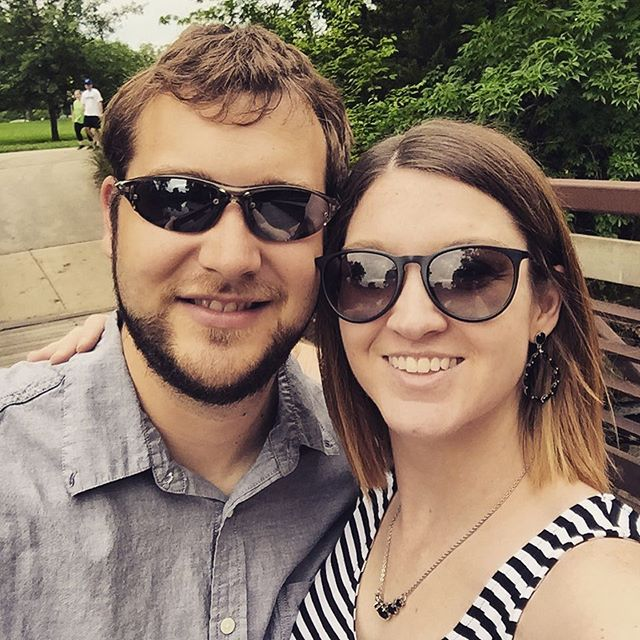

About Me
Hello World! said no page ever before this one. Joking aside I am excited to show off my first website! My name is Brandon York and I am a first time developer. My wife Kendra has supported me in my career change and I couldn’t be happier. We have been married for 3 years, living in Kansas City for 7 years. We are both graduates of Pittsburg State University where we met. I have a bachelors in Business Management and she has a degree in Communications. We live in Lenexa and have a cat named Lena who we are both pretty much obsessed with. I enjoy watching football (Go Chiefs!), baseball (Go Royals!), and basketball (Rock Chalk Jayhawk!). We also love to eat at new places and try all kinds of food. We both love living in the "big city" and wouldn't trade if for anything.